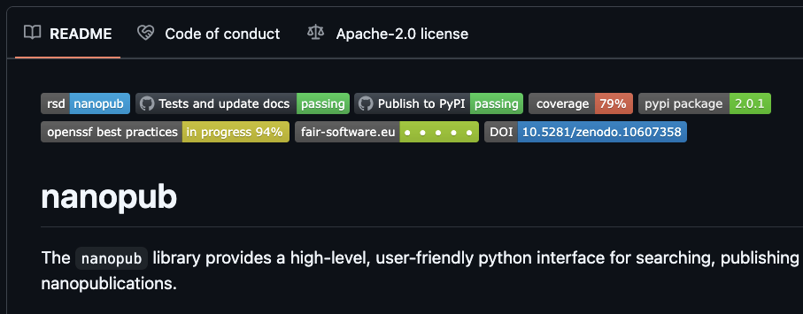

Content from Introduction to good practices in research software development
Last updated on 2025-02-25 | Edit this page
Overview
Questions
- What are benefits of applying software engineering good practices?
- How does software engineering differ from programming?
- When to use which tools?
Objectives
- Understand the benefits of applying software engineering good practices
- Understand the key characteristics that make code modular and why it is advantageous.
- Know when to use which software engineering tools.
Look through these introduction slides.
Initially, without software engineering tools, development speed is high, but it quickly drops as the project grows more complex.
Instead, if you use the right tools and skills the development speed will be slower at first because of the necessary setup, but increases as you get further in a project.
Nevertheless, all projects are different. A lot of the tools and skills we teach are useful in complex long-running projects, but can add unnecessary overhead in short-lived, simple projects.
We will refer to this line of thought throughout the workshop.
Discussion
Which good practices are relevant for your project and why?
Key Points
- Software engineering tools and skills can increase development speed over time
- You do not always need to apply all the best practices. For simple short-lived projects it is not always worth the investment.
Content from Modular Code Development
Last updated on 2025-03-12 | Edit this page
Overview
Questions
- What are the benefits of writing modular code in terms of maintenance and scalability?
- How can nested code be targeted and improved through modularization?
Objectives
- Understand the key characteristics that make code modular and why it is advantageous.
- Learn strategies for identifying potential modules within complex code to improve readability and reusability.
What is modularity?
Modularity refers to the practice of building software from smaller, self-contained, and independent elements. Each element is designed to handle a specific set of tasks, contributing to the overall functionality of the system.
We will explain modular coding in the slides. You can view the slides here.
Modularity (20 min)
Carefully review the following code snippet:
PYTHON
def convert_temperature(temperature, unit):
if unit == "F":
# Convert Fahrenheit to Celsius
celsius = (temperature - 32) * (5 / 9)
if celsius < -273.15:
# Invalid temperature, below absolute zero
return "Invalid temperature"
else:
# Convert Celsius to Kelvin
kelvin = celsius + 273.15
if kelvin < 0:
# Invalid temperature, below absolute zero
return "Invalid temperature"
else:
fahrenheit = (celsius * (9 / 5)) + 32
if fahrenheit < -459.67:
# Invalid temperature, below absolute zero
return "Invalid temperature"
else:
return celsius, kelvin
elif unit == "C":
# Convert Celsius to Fahrenheit
fahrenheit = (temperature * (9 / 5)) + 32
if fahrenheit < -459.67:
# Invalid temperature, below absolute zero
return "Invalid temperature"
else:
# Convert Celsius to Kelvin
kelvin = temperature + 273.15
if kelvin < 0:
# Invalid temperature, below absolute zero
return "Invalid temperature"
else:
return fahrenheit, kelvin
elif unit == "K":
# Convert Kelvin to Celsius
celsius = temperature - 273.15
if celsius < -273.15:
# Invalid temperature, below absolute zero
return "Invalid temperature"
else:
# Convert Celsius to Fahrenheit
fahrenheit = (celsius * (9 / 5)) + 32
if fahrenheit < -459.67:
# Invalid temperature, below absolute zero
return "Invalid temperature"
else:
return celsius, fahrenheit
else:
return "Invalid unit"Refactor the code by extracting functions without altering its functionality.
- What functions did you create?
- What strategies did you use to identify them?
Share your answers in the collaborative document.
PYTHON
def celsius_to_fahrenheit(celsius):
return (celsius * (9 / 5)) + 32
def fahrenheit_to_celsius(fahrenheit):
return (fahrenheit - 32) * (5 / 9)
def celsius_to_kelvin(celsius):
return celsius + 273.15
def kelvin_to_celsius(kelvin):
return kelvin - 273.15
def check_temperature_validity(temperature, unit):
abs_zero = {"C": -273.15, "F": -459.67, "K": 0}
if temperature < abs_zero[unit]:
return False
return True
def check_unit_validity(unit):
if not unit in ["C", "F", "K"]:
return False
return True
def convert_temperature(temperature, unit):
"""
Converts a temperature from one unit to another.
Args:
temperature (float): The temperature to convert.
unit (str): The unit of the temperature. Must be "C", "F", or "K".
Returns:
tuple: A tuple containing the converted temperature in Celsius and Kelvin units.
Raises:
ValueError: If the unit is not "C", "F", or "K".
ValueError: If the temperature is below absolute zero for the given unit.
Examples:
>>> convert_temperature(32, "F")
(0.0, 273.15)
>>> convert_temperature(0, "C")
(32.0, 273.15)
>>> convert_temperature(273.15, "K")
(0.0, -459.67)
"""
if not check_unit_validity(unit):
raise ValueError("Invalid unit")
if not check_temperature_validity(temperature, unit):
raise ValueError("Invalid temperature")
if unit == "F":
celsius = fahrenheit_to_celsius(temperature)
kelvin = celsius_to_kelvin(celsius)
return celsius, kelvin
if unit == "C":
fahrenheit = celsius_to_fahrenheit(temperature)
kelvin = celsius_to_kelvin(temperature)
return fahrenheit, kelvin
if unit == "K":
celsius = kelvin_to_celsius(temperature)
fahrenheit = celsius_to_fahrenheit(celsius)
return celsius, fahrenheit
if __name__ == "__main__":
print(convert_temperature(0, "C"))
print(convert_temperature(0, "F"))
print(convert_temperature(0, "K"))
print(convert_temperature(-500, "K"))
print(convert_temperature(-500, "C"))
print(convert_temperature(-500, "F"))
print(convert_temperature(-500, "B"))PYTHON
class TemperatureConverter:
"""
A class for converting temperatures between Celsius, Fahrenheit, and Kelvin.
"""
def __init__(self):
"""
Initializes the TemperatureConverter object with a dictionary of absolute zero temperatures for each unit.
"""
self.abs_zero = {"C": -273.15, "F": -459.67, "K": 0}
def celsius_to_fahrenheit(self, celsius):
return (celsius * (9 / 5)) + 32
def fahrenheit_to_celsius(self, fahrenheit):
return (fahrenheit - 32) * (5 / 9)
def celsius_to_kelvin(self, celsius):
return celsius + 273.15
def kelvin_to_celsius(self, kelvin):
return kelvin - 273.15
def check_temperature_validity(self, temperature, unit):
if temperature < self.abs_zero[unit]:
return False
return True
def check_unit_validity(self, unit):
if unit not in ["C", "F", "K"]:
return False
return True
def convert_temperature(self, temperature, unit):
if not self.check_unit_validity(unit):
raise ValueError("Invalid unit")
if not self.check_temperature_validity(temperature, unit):
raise ValueError("Invalid temperature")
if unit == "F":
celsius = self.fahrenheit_to_celsius(temperature)
kelvin = self.celsius_to_kelvin(celsius)
return celsius, kelvin
if unit == "C":
fahrenheit = self.celsius_to_fahrenheit(temperature)
kelvin = self.celsius_to_kelvin(temperature)
return fahrenheit, kelvin
if unit == "K":
celsius = self.kelvin_to_celsius(temperature)
fahrenheit = self.celsius_to_fahrenheit(celsius)
return celsius, fahrenheit
if __name__ == "__main__":
converter = TemperatureConverter()
print(converter.convert_temperature(0, "C"))
print(converter.convert_temperature(0, "F"))
print(converter.convert_temperature(0, "K"))
print(converter.convert_temperature(-500, "K"))
print(convert_temperature(-500, "C"))
print(convert_temperature(-500, "F"))
print(convert_temperature(0, "X"))Key Points
- Software is built from smaller, self-contained elements, each handling specific tasks.
- Modular code enhances robustness, readability, and ease of maintenance.
- Modules can be reused across projects, promoting efficiency.
- Good modules perform limited, defined tasks and have descriptive names.
- Focus on readability and use tests to guide modularization.
Content from Document your research software
Last updated on 2025-03-12 | Edit this page
Overview
Questions
- What different types of documentation are there?
- How to help others to use your project?
- What are docstrings and what information should go into docstrings?
- What different tools exist for generating documentation?
Objectives
- Know what makes a good documentation
- Know how to document your project and get credit for your work
- Learn what docstrings are and how to use them
- Learn what tools can be used for generating documentation
- Implement MkDocs to generate comprehensive project documentation
Why we teach this lesson
Specific motivations:
- Code documentation should be part of your source code so that it remains easily accessible and maintainable for all users.
- Good documentation allows others to install and make use of your code independently and increase the impact of your project.
- Documentation can facilitate collaborations by helping us onboard new project members quickly and more easily.
- By writing documention you think about the design of your code.
What makes a good documentation?
Exercise: Think of good and bad examples
Write down your thoughts in the collaborative documents. Respond with emojis 👍 🙀 to your colleagues’ answers. - Think of projects of which you like the documentation. What do you like about them? - Think of projects for which you don’t like the documentation. What don’t you like about them? Are you missing anything?
NB: You can choose a mature library with lots of users for this exercise, but try to also think of less mature projects you had to collaborate on, or papers you had to reproduce.
- It is important to document code
- Think about the people reading your documentation (your audience)
- Depending on the purpose and state of the project documentation needs to meet different criteria.
- For most scientific projects, in-code documentation and a well thought out README file is enough.
- Documentation should be tracked with corresponding code
Types of documentation
There are different types of documentation:
- README and CITATION files
- in-code documentation (comments and docstrings)
- Tutorials
Writing good README files
The README file is the first thing a user/collaborator sees. It should include:
- A descriptive project title
- Motivation (why the project exists)
- How to setup
- Copy-pastable quick start code example
- Link or instructions for contributing
- Badges
- Citation
Badges
Badges are a way to quickly show the status of a project: is it building, is it tested, what is the license? You typically find them on top of the README file:
.
Draft or improve a README for one of your recent projects (in breakout rooms)
Try to draft a brief README or review a README which you have written for one of your projects. You can work individually, but you could also discuss whether anything can be improved on your neighbour’s README file(s). Think about the user (which can be a future you) of your project, what does this user need to know to use or contribute to the project? And how do you make your project attractive to use or contribute to?
Add a badge
Add a badge to your README file. This comes down to simply adding a link to an image on top of your README file.
You can pick from:
- A simple static badge. You can decide what it says and what color it is.
- The howfairis badge. It indicates whether a project is in line with the FAIR software recommendations.
- A badge reporting test coverage (we will discuss testing and continuous integration in upcoming episodes)
- A badge linking to a publication in Zenodo
- A badge showing the license
(optional) Make your writing bold and clear
Try the https://hemingwayapp.com/ to analyse your README file and make your writing bold and clear.
Citation
It is easy to correctly cite a paper: all the necessary information (metadata) can be found on the title page or the article website.
Software and datasets have no title page, the relevant information is often less obvious. To get credit for your work, you should provide citation information for your software.
A good way to add citation information is by including a CITATION.cff file (Citation File Format) in the root of your repository. This plain text file, written in YAML format, contains all the necessary citation details in a structured manner.
Platforms like GitHub, Zenodo, and Zotero reuse the citation metadata you provide. GitHub, for example, automatically renders the file on the repository landing page and provides a BibTeX snippet which users can simply copy!
Minimal example for a CITATION.cff file
YAML
authors:
- family-names: Doe
given-names: John
cff-version: 1.2.0
message: "If you use this software, please cite it using the metadata from this file."
title: "My research software"We can also include other important information of software such as version, release date, DOI, license, keywords.
How to create a CITATION.cff file?
You can use the cffinit tool to create a citation file.
Exercise: Create a CITATION.cff using cffinit
- Follow these steps to create a CITATION file with cffinit.
- Rename the created file to
CITATION.cffand add it to the root folder of your repository. - Push your changes to
mainand check your repository in GitHub. What has happened?
In-code documentation
In-code documentation makes code more understandable and explains decisions we made.
When not to use:
- When the code is self-explanatory
- To replace good variable/function names
- To replace version control
- To keep old (zombie) code around
Readable code vs commented code
vs
Exercise: Writing good in-code comments
Let’s take a look at two example comments:
Comment A
PYTHON
# now we check if temperature is below -50
if temperature < -50:
print("ERROR: temperature is too low")Comment B
PYTHON
# we regard temperatures below -50 degrees as measurement errors
if temperature < -50:
print("ERROR: temperature is too low")Which of these comments is more useful? Can you explain why?
Comment B is the correct choice!
- Comment A describes what happens in this piece of code. This can be useful for somebody who has never seen Python or a program, but for somebody who has, it can feel like a redundant commentary.
- Comment B is probably more useful as it describes why this piece of code is there, i.e. its purpose.
What are “docstrings” and how can they be useful?
Docstrings are a special kind of comment that are used to document
functions, classes and modules. Here is function
fahrenheit_to_celsius which converts temperature in
Fahrenheit to Celsius.
The first set of examples uses regular comments:
PYTHON
# This function converts a temperature in Fahrenheit to Celsius.
def fahrenheit_to_celsius(temp_f: float) -> float:
temp_c = (temp_f - 32.0) * (5.0/9.0)
return temp_cThe second set uses docstrings or similar concepts. Please compare the two (above and below):
PYTHON
def fahrenheit_to_celsius(temp_f: float) -> float:
"""
Converts a temperature in Fahrenheit to Celsius.
Args:
temp_f: The temperature in Fahrenheit.
Returns:
The temperature in Celsius.
"""
temp_c = (temp_f - 32.0) * (5.0/9.0)
return temp_cUnlike regular comments, docstrings are stored as an attribute
(__doc__) of the object they document and can be extracted
programmatically.
Docstrings are more powerful than comments:
- Docstrings are automatically extracted when calling the
helpfunction. - Tools (e.g.
mkdocs,sphinx) can generate documentation pages automatically from docstrings known as API documentation.
A good docstring should describe:
- What the function does
- What goes in (including the type of the input variables)
- What goes out (including the return type)
There are different docstrings styles, such as Google style, numpy style and reStructered style, with Google style being the most common. See documentation here for more information.
Exercise: Identify a proper docstring
Which of the following options is the correct function with a proper docstring?
Option A
PYTHON
def check_unit_validity(unit: str) -> bool:
"""
Checks if a unit is valid.
Args:
unit: The unit to check. Must be "C", "F", or "K".
Returns:
True if the unit is valid, False otherwise.
"""
if not unit in ["C", "F", "K"]:
return False
return TrueOption B
PYTHON
def check_unit_validity(unit):
"""
Checks if a unit is valid.
Args:
unit (str): The unit to check. Must be "C", "F", or "K".
Returns:
bool: True if the unit is valid, False otherwise.
"""
if not unit in ["C", "F", "K"]:
return False
return TrueOption C
Option A and B are both correct choices!
- Option A: The docstring is detailed. It does not require types (str, bool) since they are already specified in the function signature.
- Option B: The docstring is detailed and includes descriptions of the arguments and return type since they are not specified in the function signature.
- Option C: The docstring is missing the specific valid units (“C”, “F”, “K”) in the description of the unit parameter, making it less informative.
Tools for generating and deploying documentation
You can use the following tools to generate user or API documentation.
Tools for generating documentation
MkDocs and Sphinx:
- create nicely-formatted HTML pages out of .md or .rST files
- programming language independent
Sphinx
Like MkDocs, Sphinx is a documetatation generator which translates a set of plain text source files into various output formats. It natively supports reStructuredText (rST) and with some extensions also supports Markdown.
Create a directory for the example documentation, step into it, and inside generate the basic documentation template:
$ mkdir doc-example
$ cd doc-example
$ sphinx-quickstartThe quickstart utility will ask you some questions. For this exercise, you can go with the default answers except to specify a project name, author name, and project release:
> Separate source and build directories (y/n) [n]: <hit enter>
> Project name: <your project name>
> Author name(s): <your name>
> Project release []: 0.1
> Project language [en]: <hit enter>A couple of files and directories are created:
| File/directory | Contents |
|---|---|
| conf.py | Documentation configuration file |
| index.rst | Main file in Sphinx |
| _build/ | Directory where docs are built (you can decide the name) |
| _templates/ | Your own HTML templates |
| _static/ | Static files (images, styles, etc.) copied to output directory on build |
| Makefile | Makefile to build documentation using make |
| make.bat | Makefile to build documentation using make (Windows) |
Makefile and make.bat (for Windows) are
build scripts that wrap the sphinx commands, but we will be doing it
explicitly.
Let’s have a look at the index.rst file, which is the
main file of your documentation:
RST
.. myproject documentation master file, created by
sphinx-quickstart on Sat Sep 23 17:35:26 2023.
You can adapt this file completely to your liking, but it should at least
contain the root `toctree` directive.
Welcome to myproject's documentation!
=====================================
.. toctree::
:maxdepth: 2
:caption: Contents:
Indices and tables
==================
* :ref:`genindex`
* :ref:`modindex`
* :ref:`search`- We will not use the
Indices and tablessection now, so remove it and everything below. - The top four lines, starting with
.., are a comment. - The next lines are the table of contents. We can add content below:
Note that some-feature.md needs to be indented to align
with :caption:.
We now need to tell Sphinx to use markdown files. To do this, we open
conf.py and replace the line:
with this line so that Sphinx can parse Markdown files:
Let’s create the file some-feature.md (in Markdown
format) which we have just listed in index.rst (which uses
reStructured Text format).
MD
# Some feature
## Subsection
Exciting documentation in here.
Let's make a list (empty surrounding lines required):
- item 1
- nested item 1
- nested item 2
- item 2
- item 3We now build the site:
$ ls -1
_static
_templates
conf.py
index.rst
make.bat
Makefile
some-feature.md
$ sphinx-build . _build
... lots of output ...
build succeeded.
The HTML pages are in _build.
$ ls -1 _build
_sources
_static
genindex.html
index.html
objects.inv
search.html
searchindex.js
some-feature.htmlNow open the file _build/index.html in your browser.
-
Linux users, type:
$ xdg-open _build/index.html -
macOS users, type:
$ open _build/index.htmlgit -
Windows users, type:
$ start _build/index.html If the above does not work: Enter
file:///home/user/doc-example/_build/index.htmlin your browser (adapting the path to your case).
Hopefully you can now see a website. If so, then you are able to build Sphinx pages locally. This is useful to check how things look before pushing changes to GitHub or elsewhere.
Note that you can change the styling by editing conf.py
and changing the value html_theme (for instance you can set
it to sphinx_rtd_theme (if you have that Python package
installed) to have the Read the Docs look).
(Optional) exercise: Adding more Sphinx content
- Add an entry below
some-feature.mdlabeledanother-feature.md(or a better name) to theindex.rstfile. - Create a file
another-feature.mdin the same directory as theindex.rstfile. - Add some content to
another-feature.md, rebuild withsphinx-build . _build, and refresh the browser to look at the results. - Use the MyST Typography page as help.
Experiment with the following Markdown syntax:
*Emphasized text* and **bold text**
Headings:
An image:
[A link](https://www.example.org)Numbered lists (numbers adjusted automatically):
- Simple tables:
- Code blocks:
MARKDOWN
The following is a Python code block:
```python
def hello():
print("Hello world")
```
And this is a C code block:
```c
#include <stdio.h>
int main()
{
printf("Hello, World!");
return 0;
}
```- You could include an external file (here we assume a file called “example.py” exists; at the same time we highlight lines 2 and 3):
- We can also use Jupyter notebooks (*.ipynb) with Sphinx. It requires the myst-nb extension to be installed.
(Optional) exercise Adding Math equations
Math equations should work out of the box. In some older versions,
you might need to edit conf.py and add
sphinx.ext.mathjax:
Try this (result below):
MARKDOWN
This creates an equation:
```{math}
a^2 + b^2 = c^2
```
This is an in-line equation, {math}`a^2 + b^2 = c^2`, embedded in text.This creates an equation: {math} a^2 + b^2 = c^2
This is an in-line equation, {math}a^2 + b^2 = c^2,
embedded in text.
(Optional) exercise: Adding API documentation
- Write some docstrings in functions and/or class definitions of an
examplepython module:
PYTHON
def multiply(a: float, b: float) -> float:
"""
Multiply two numbers.
:param a: First number.
:param b: Second number.
:return: The product of a and b.
"""
return a * b- In the file
conf.pymodify “extensions” and add 3 lines:
- List
apidocs/indexin the toctree inindex.rst.
- Re-build the documentation and check the “API reference” section.
Deploying documentation using Github pages
- GitHub pages can be setup inside your GitHub repository
- It automatically deploys your Sphinx-generated documentation. Or in other words it creates a website for you that renders your documentation.
Key Points
- Depending on the purpose and state of the project documentation needs to meet different criteria.
- Good README files provide a good landing place for anyone that is new to your project.
- Comments should describe the why for your code not the what.
- Writing docstrings can be a good way to write documentation while you type code since it also makes it possible to query that information from outside the code or to auto-generate documentation pages.
- There are various tools for generating and deploying documentations which translate a set of plain text sources into various output formats.
Content from Testing
Last updated on 2025-01-20 | Edit this page
Overview
Questions
- Why should I write automated tests for my code?
- How do I write a good unit test?
Objectives
- Use
pytestto write and run unit tests - Understand that testing has many forms.
Basics of testing
Follow these slides to understand the basics of testing.
The first step toward getting the right answers from our programs is to assume that mistakes will happen and to guard against them. This is called defensive programming and the most common way to do it is to add alarms and tests into our code so that it checks itself.
Testing should be a seamless part of scientific software development process. This is analogous to experiment design in the experimental science world:
- At the beginning of a new project, tests can be used to help guide the overall architecture of the project.
- The act of writing tests can help clarify how the software should be perform when you are done.
- In fact, starting to write the tests before you even write the software might be advisable. Such a practice is called test-driven development.
Tests types
There are many ways to test software, such as:
- Assertions
- Exceptions
- Unit Tests
- Integration Tests
Exceptions and Assertions: While writing code,
exceptions and assertions can be added to
sound an alarm as runtime problems come up. These kinds of tests, are
embedded in the software itself and handle, as their name implies,
exceptional cases rather than the norm.
Unit Tests: Unit tests investigate the behavior of units of code (such as functions, classes, or data structures), ideally the smallest possible units. By validating each software unit across the valid range of its input and output parameters, tracking down unexpected behavior that may appear when the units are combined is made vastly simpler.
Integration Tests: Integration tests check that various pieces of the software work together as expected. They can be both on small scales, or system wide.
How much testing is enough?
Possible tests metrics are:
- Lines of code.
- Test coverage example: to check to which extent the software is being coverted by the tests.
PyTest
Currently, PyTest is the recommended Python testing framework. Let’s see how it can be used to run the tests.
First, create a directory and navigate into it:
Then, create a file example.py containing an example
test. You can use for favourite text editor for creating the file:
And then, in the file, type:
PYTHON
def add(a, b):
return a + b
def test_add(): # Special name!
assert add(2, 3) == 5 # What's `assert`? 🤔
assert add('space', 'ship') == 'spaceship'What’s assert?
Assertions are the simplest type of test. They are used as a tool for bounding acceptable behavior during runtime. The assert keyword in python has the following behavior:
OUTPUT
Traceback (most recent call last):
File "<stdin>", line 1, in <module>
AssertionErrorThat is, assertions raise an AssertionError if the
comparison is false. It does nothing at all if the comparison is true.
Assertions are therefore a simple way of writing tests.
Activate your conda environment:
Check the version of pytest:
Finally, run the test:
OUTPUT
pytest example.py
======================== test session starts ========================
platform linux -- Python 3.6.9, pytest-7.0.1, pluggy-1.0.0
rootdir: /home/ole/Desktop/pytest-texample
collected 1 item
example.py . [100%]
========================= 1 passed in 0.00s =========================
When pytest is run, it will search all directories below
where it was called, find all of the Python files in these directories
whose names start or end with test, import them, and run
all of the functions and classes whose names start with
test or Test. This automatic registration of
test code saves tons of human time and allows us to focus on what is
important: writing more tests.
When you run pytest, it will print a dot
(.) on the screen for every test that passes, an
F for every test that fails or where there was an
unexpected error. The tests pass when they do not throw errors. In rarer
situations you may also see an s indicating a skipped tests
(because the test is not applicable on your system) or a x
for a known failure (because the developers fixed the problem shown in
the test). After the dots, pytest will print summary information.
Tests collection
If you do pytest dir, the pytest package
‘sniffs-out’ the tests in the directory and ran them together to produce
a report of the sum of the files and functions matching the regular
expression [Tt]est[-_]*.
What happens if we break the test on purpose?
PYTHON
def add(a, b):
return a - b # Uh oh, mistake! 😱
def test_add():
assert add(2, 3) == 5
assert add('space', 'ship') == 'spaceship'Let’s save the edits and run pytest again:
OUTPUT
======================== test session starts =========================
platform linux -- Python 3.6.9, pytest-7.0.1, pluggy-1.0.0
rootdir: /home/ole/Desktop/pytest-texample
collected 1 item
example.py F [100%]
============================== FAILURES ==============================
______________________________ test_add ______________________________
def test_add():
> assert add(2, 3) == 5
E assert -1 == 5
E + where -1 = add(2, 3)
example.py:6: AssertionErrorYou can notice that functions fail on the first error, but all test functions are executed.
Pure vs impure functions
Pure functions are deterministic, have a return value, have no side effects[1], and have referential transparency[2]. Thus, pure functions are easy to understand and test.
[1] Side effects: interactions of a function with its surroundings. [2] Replacing a function call with the return of that function should not change anything.
Examples of pure functions:
On the other hand, impure functions can be both intuitive:
PYTHON
my_list = []
def append_to_my_list(item):
my_list.append(item)
def read_data(file_name):
return pd.read_csv(file_name)
def get_random_number(number):
return random.random()And not so intuitive:
PYTHON
def hello(name):
print("Hello", name)
nums = [1, 2]
def append(a_list, item):
a_list += [item]
return a_list
print(nums) # [1, 2]
print(append(nums, 3)) # [1, 2, 3]
print(nums) # [1, 2, 3] 😬Some side effects can be indeed necessary or hard to spot.
Use pure functions when possible 👌
Test-Driven Development: FizzBuzz Function (15 min)
The function fizz_buzz() takes an integer argument and
returns it, BUT:
- Fails on zero or negative numbers.
- Instead returns “Fizz” on multiples of 3.
- Instead returns “Buzz” on multiples of 5.
- Instead returns “FizzBuzz” on multiples of 3 and 5.
Create an empty function fizz_buzz() and go through the
conditions listed above, one by one:
- Write a test for the condition.
- Edit the
fizz_buzz()function until the test passes.
Then discuss together the different solutions.
Here is a potential solution:
PYTHON
import pytest
def fizz_buzz(input):
if input <= 0:
raise ValueError('Negative or zero input not allowed')
if input % 3 == 0 and input % 5 == 0:
return 'FizzBuzz'
if input % 3 == 0:
return 'Fizz'
if input % 5 == 0:
return 'Buzz'
return input
def test_fizz_buzz():
with pytest.raises(ValueError):
fizz_buzz(0)
with pytest.raises(ValueError):
fizz_buzz(-2)
assert fizz_buzz(1) == 1
assert fizz_buzz(3) == 'Fizz'
assert fizz_buzz(4) == 4
assert fizz_buzz(5) == 'Buzz'
assert fizz_buzz(6) == 'Fizz'
assert fizz_buzz(10) == 'Buzz'
assert fizz_buzz(15) == 'FizzBuzz'Key Points
- Tests are meant for preserving functionality by detecting new errors early and facilitating reproducibility for research software.
- Tests can help users in verifying correct installation and improving correctness for research output.
- Tests enable developers to make refactoring easier and simplify external contributions.
- Test-Driven Development (TDD) is an optional tool in your toolbox.
Content from Continuous Integration
Last updated on 2025-01-20 | Edit this page
Overview
Questions
- How can we implement automatic testing each time we push changes to the repository?
Objectives
- Set up Continuous Integration using GitHub Actions
Introducing Continuous integration
Follow these slides to understand the basics of continuous integration.
Full-cycle collaborative workflow
Exercise: Full-cycle collaborative workflow
The exercise takes 30-40 minutes.
In this exercise, everybody will:
- A. Set up automated tests with GitHub Actions
- B. Make test fail / find a bug in their repository
- C. Open an issue in their repository
- D. Then each one will clone the repo of one of their exercise partners, fix the bug, and open a pull request (GitHub)
- E. Everybody then merges their co-worker’s change
Step 1: Create a new repository on GitHub
- Select a different repository name than your colleagues (otherwise forking the same name will be strange)
- Before you create the repository, select “Initialize this repository with a README” (otherwise you try to clone an empty repo).
- Share the repository URL with your exercise group via shared document or chat
Step 2: Clone your own repository, add code, commit, and push
Clone the repository.
Add a file example.py containing:
PYTHON
def add(a, b):
return a + b
def subtract(a, b):
return a + b # do not change this line until prompted to do so.Write a test function def test_add() for
add to check that this function is working properly. Do NOT
add a test function for subtract (yet). Run pytest to
ensure it works
Then stage the file (git add <filename>), commit
(git commit -m "some commit message"), and push the changes
(git push).
Step 3: Enable automated testing
In this step we will enable GitHub Actions. - Select “Actions” from your GitHub repository page. You get to a page “Get started with GitHub Actions”. - Select the button for “Set up this workflow” under Python Application.
 Select “Python
application” as the starter workflow.
Select “Python
application” as the starter workflow.
GitHub creates the following file for you in the subfolder
.github/workflows:
YAML
# This workflow will install Python dependencies, run tests and lint with a single version of Python
# For more information see: https://help.github.com/actions/language-and-framework-guides/using-python-with-github-actions
name: Python application
on:
push:
branches: [ main ]
pull_request:
branches: [ main ]
jobs:
build:
runs-on: ubuntu-latest
steps:
- uses: actions/checkout@v2
- name: Set up Python 3.9
uses: actions/setup-python@v2
with:
python-version: 3.9
- name: Install dependencies
run: |
python -m pip install --upgrade pip
pip install flake8 pytest
if [ -f requirements.txt ]; then pip install -r requirements.txt; fi
- name: Lint with flake8
run: |
# stop the build if there are Python syntax errors or undefined names
flake8 . --count --select=E9,F63,F7,F82 --show-source --statistics
# exit-zero treats all errors as warnings. The GitHub editor is 127 chars wide
flake8 . --count --exit-zero --max-complexity=10 --max-line-length=127 --statistics
- name: Test with pytest
run: |
pytestCommit the change by pressing the “Start Commit” button.
Step 4: Verify that tests have been automatically run
Observe in the repository how the test succeeds. While the test is executing, the repository has a yellow marker. This is replaced with a green check mark, once the test succeeds.

Green check means passed.
Also browse the “Actions” tab and look at the steps there and their output.
Step 5: Add a test which reveals a problem
After you committed the workflow file, your GitHub repository will be ahead of your local cloned repository. Update your local cloned repository:
$ git pull origin mainNext uncomment add a test function test_subtract for to
check that the subtract function can subtract two numbers
from each other, and push it to your remote repository. Verify that the
test suite now fails on the “Actions” tab (GitHub).
Step 6: Open an issue on GitHub
Open a new issue in your repository about the broken test (click the “Issues” button on GitHub and write a title for the issue). The plan is that your colleague will fix the issue through a pull request
Step 7: Fork and clone the repository of your colleague
Fork the repository using the GitHub web interface. Make sure you clone the fork after you have forked it. Do not clone your colleague’s repository directly.
Step 8: Fix the broken test
Fix the function now and run pytest to check that it works. Then push to your fork. Check whether the action now also passes.
Step 9: Open a pull request (GitHub)
Then before accepting the pull request from your colleague, observe how GitHub Actions automatically tested the code.
If you forgot to reference the issue number in the commit message,
you can still add it to the pull request:
my pull request title, closes #NUMBEROFTHEISSUE
Key Points
- Use GitHub Actions to automate checking your code each time you push changes to the repository.